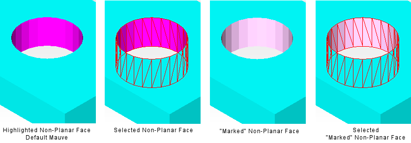
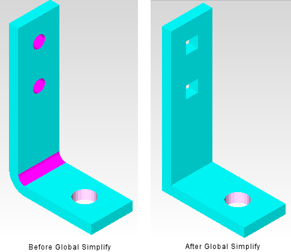

Non-planar
faces can be excluded from global simplification, a technique best
used to retain large holes that may have a dominant effect on the airflow.
Procedure
- Select the non-planar face
or faces. Non-planar faces are highlighted in magenta by default,
but this can be overridden using the Preferences dialog box.
- Click the Local Simplify icon or
choose to
open the Local Simplify dialog box.
- Click the Mark button
or press M to mark the selected non-planar faces. Marking non-planar
faces changes the color of a highlighted non-planar face from a
deep to a light magenta as shown in Figure 1. Click the Un-Mark button or
press U to un-mark selected marked non-planar faces.
Figure 1. Un-Marked and Marked
Non-Planar Face
Results
Figure 2 shows an example where one hole (the
bottom hole) in a bracket has been marked before a global simplification. The
marked hole retains its non-planar face.
Figure 2. Effect of Marking a
Non-Global Face When Global Simplifying